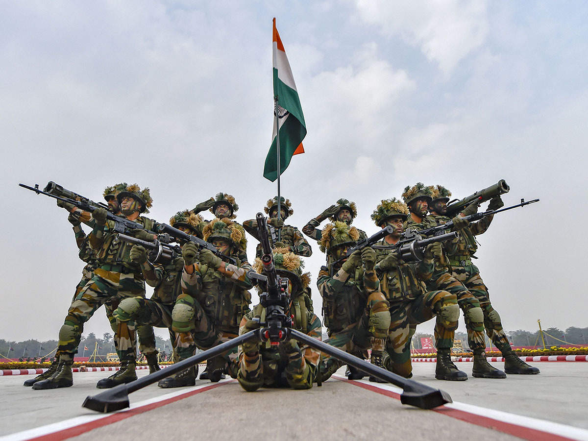
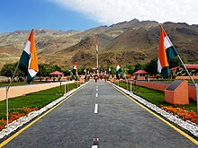
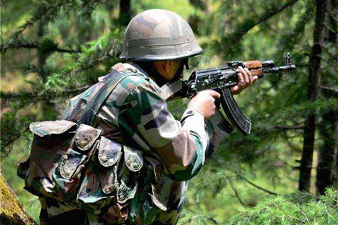

Indian Army
The Fighters

A Proud to be an Indian .
Either I will come back after hoisting the tricolor, or I will come back wrapped in it, but I will be back
for sure .
-by India Army
A brief history about Indian Army :
- The Army of India was raised under the British Raj in the 19th century by taking the erstwhile presidency
armies, merging them, and bringing them under the Crown. The British Indian Army fought in both World Wars
The British Indian Army was a critical force for maintaining the primacy of the British Empire, both in India and throughout the world. Besides maintaining the internal security of the British Raj, the Army fought in many other theatres: the Anglo-Burmese Wars; the First and Second Anglo-Sikh wars; the First, Second, and Third Anglo-Afghan wars; the First and Second opium wars, and the Boxer Rebellion in China; and in Abyssinia. -
Indian independence
Army Day is celebrated on 15 January every year in India, in recognition of Lieutenant General K. M. Cariappa's taking over as the first commander-in-chief of the Indian Army from General Sir Francis Butcher, the last British commander-in-chief of India, on 15 January 1949. With effect from 26 January 1950, the date India became a republic, all active-duty Indian Army officers formerly holding the King's Commission were recommissioned and confirmed in their substantive ranks

- In 1998, India carried out nuclear tests; and a few days later, Pakistan responded with nuclear tests of its own, giving both countries nuclear deterrence capability, although India had tested a hydrogen bomb, which Pakistan lacked. Diplomatic tensions eased after the Lahore Summit was held in 1999. However, the sense of optimism was short-lived. In mid-1999, Pakistani paramilitary forces and Kashmiri insurgents captured the deserted, but strategic, Himalayan heights in the Kargil district of India. These had been vacated by the Indian Army during the onset of the inhospitable winter and were to be reoccupied in spring. The troops that took control of these areas received important support, of both arms and supplies, from Pakistan. Some of the heights under their control, which also included the Tiger Hill, overlooked the vital Srinagar–Leh Highway (NH 1A), Batalik, and Dras. Kargil War Memorial looking at National Highway 1 from the foot of Tololing Once the scale of the Pakistani incursion was realised, the Indian Army quickly mobilised about 200,000 troops, and Operation Vijay was launched. However, since the heights were under Pakistani control, India was at a clear strategic disadvantage. From their observation posts, the Pakistani forces had a clear line-of-sight to lay down indirect artillery fire on NH 1A, inflicting heavy casualties on the Indians.[70] This was a serious problem for the Indian Army as the highway was its main supply route.[71] Thus, the Indian Army's first priority was to recapture peaks that were in the immediate vicinity of NH 1A. This resulted in Indian troops first targeting the Tiger Hill and Tololing complex in Dras.[72] This was soon followed by more attacks on the Batalik–Turtok sub-sector, which provided access to Siachen Glacier. Point 4590, which had the nearest view of the NH 1A, was successfully recaptured by Indian forces on 14 June 
-
2016 Surgical Strikes on Kashmir and the 2016–2018 India-Pakistan conflict
On 18 September 2016, a fedayeen attack was made by four armed militants on an army base near the town of Uri. Nineteen Indian Army soldiers were killed. India accused Jaish-e-Muhammad, a Pakistan-based terrorist organisation.[79] On 29 September 2016, the India Army announced that it conducted "surgical strikes" against militant launch pads across the Line of Control, in Pakistani-administered Kashmir, and inflicted "significant casualties".[80] Indian media reported the casualty figures variously from 35 to 70 killed.[81][82] Partial footage of the strikes was released to the Indian media on 27 June 2018 as proof of the strike.[83][84][85] The incident triggered the 2016–2018 India-Pakistan border conflict, which ended on 16 June 2018 with both India and Pakistan agreeing on a ceasefire. - Command: Indian Army has six operational commands and one training command. Each one is headed by a general officer commanding-in-chief (GOC-in-C), known as the army commander, who is among the seniormost Lieutenant General officers in the army
- Corps: A command generally consists of two or more corps. Indian Army has 14 Corps each one commanded by a general officer commanding (GOC), known as the corps commander, who holds the rank of Lieutenant General.[118] Each corps is composed of three or four divisions. There are three types of corps in the Indian Army: Strike, Holding and Mixed. The Corps HQ is the highest field formation in the army
- Division: Each division is headed by GOC (division commander) in the rank of major general.[118] It usually consists of three to four Brigades.[118] Currently, the Indian Army has 40 Divisions[161] including four RAPIDs (Re-organised Army Plains Infantry Division), 18 Infantry Divisions, 12 Mountain Divisions, three Armoured Divisions and three Artillery Divisions
- Brigade: A brigade generally consists of around 3,000 combat troops with supporting elements. An Infantry Brigade usually has three Infantry battalions along with various Support Elements.[118] It is commanded by a brigade commander who is a Brigadier,[118] equivalent to a brigadier general in some armies. In addition to the Brigades in various Army Divisions, the Indian Army also has five Independent Armoured Brigades, 15 Independent Artillery Brigades, seven Independent Infantry Brigades, one Independent Parachute Brigade, three Independent Air Defence Brigades, two Independent Air Defence Groups and four Independent Engineer Brigades. These Independent Brigades operate directly under the Corps Commander (GOC Corps).
- Battalion: Composed of four rifle companies.[118] Commanded by a battalion commander who is a Colonel[118] and is the Infantry's main fighting unit. Every infantry battalion also possesses one Ghatak Platoon
- Company: Composed of three platoons.[118] Commanded by a company commander who is a major or lieutenant-colonel
- Battery: Comprising either 3 or 4 sections, in artillery and air defence units. Every battery has two officers, the senior of which is the Battery Commande
- Platoon: Composed of three sections.[118] Commanded by a platoon commander who is a JCO.[118]
- Section: Smallest military outfit, with a strength of 10 personnel. Commanded by a section commander of the rank of Havaldar.